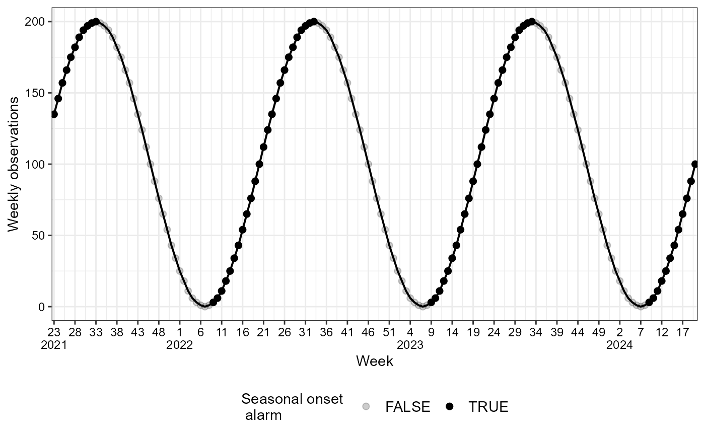

Generates a complete 'ggplot' object suitable for visualizing time series data in a
tsd, tsd_onset or tsd_onset_and_burden object.
autoplot(tsd)
Generates points for each observation and connects them with a line.
autoplot(tsd_onset)
The first plot generates a line connecting the observations. The transparency of the points reflects if seasonal onset has occurred.
The second plot presents the growth rate for each observation along with confidence intervals. The transparency of the points indicates whether a growth warning condition is met.
autoplot(tsd_onset_and_burden)
Generates a line connecting the observations in the current season, along with colored regions representing different burdens levels and a vertical line indicating outbreak start. The y-axis is scaled with
ggplot2::scale_y_log10to give better visualisation of the burden levels.
Usage
autoplot(object, ...)
# S3 method for tsd
autoplot(
object,
line_width = 0.7,
obs_size = 2,
text_family = "sans",
time_interval_step = "5 weeks",
y_label = "Weekly observations",
...
)
# S3 method for tsd_onset
autoplot(
object,
disease_color = "black",
line_width = 0.7,
obs_size = 2,
alpha_warning = 0.2,
alpha_ribbon = 0.1,
text_family = "sans",
legend_position = "bottom",
time_interval_step = "5 weeks",
y_label = "Weekly observations",
...
)
# S3 method for tsd_onset_and_burden
autoplot(
object,
y_lower_bound = 5,
factor_to_max = 2,
disease_color = "royalblue",
season_start = 21,
season_end = season_start - 1,
time_interval_step = "3 weeks",
y_label = "Weekly observations",
text_burden_size = 10/2.8,
fill_alpha = c(0.45, 0.6, 0.75, 0.89, 1),
text_family = "sans",
line_color = "black",
line_type = "solid",
vline_color = "red",
vline_linetype = "dashed",
y_scale_labels = scales::label_comma(big.mark = ".", decimal.mark = ","),
theme_custom = ggplot2::theme_bw(),
legend_position = "right",
...
)
# S3 method for tsd_growth_warning
autoplot(
object,
k = 5,
skip_current_season = TRUE,
line_width = 1,
text_family = "sans",
legend_position = "bottom",
breaks_y_axis = 8,
...
)Arguments
- object
A
tsd_onsetobject- ...
Additional arguments (not used).
- line_width
A numeric specifying the width of line connecting observations.
- obs_size
A numeric, specifying the size of observational points.
- text_family
A character specifying the font family for the text labels.
- time_interval_step
A character vector specifying the time interval and how many time steps are desired on the x-axis, e.g. '10 days', '4 weeks', or '3 months'.
- y_label
A character vector specifying the y label text.
- disease_color
A character specifying the base color of the disease.
- alpha_warning
A numeric specifying the alpha (transparency) for the observations with a seasonal_onset_alarm (first plot) or significantly positive growth rate (second plot).
- alpha_ribbon
A numeric specifying the alpha for the confidence intervals of the growth rate.
- legend_position
A character specifying the position of the legend on the plot.
- y_lower_bound
A numeric specifying the lower bound of the y-axis.
- factor_to_max
A numeric specifying the factor to multiply the high burden level for extending the y-axis.
- season_start, season_end
Integers giving the start and end weeks of the seasons to stratify the observations by.
- text_burden_size
A numeric specifying the size of the text labels.
- fill_alpha
A numeric vector specifying the transparency levels for the fill colors of burden levels. Must match the number of levels.
- line_color
A character specifying the color of the line connecting observations.
- line_type
A character specifying the line type for observation line.
- vline_color
A character specifying the color of the vertical outbreak start lines.
- vline_linetype
A character specifying the line type for outbreak start lines.
- y_scale_labels
A function to format y-axis labels.
- theme_custom
A function with a ggplot2 theme, specifying the theme to apply to the plot.
- k
An integer specifying the window size used to create the
tsd_onsetobject.- skip_current_season
A logical. Do you want to skip your current season?
- breaks_y_axis
A numeric specifying how many breaks to show on the y-axis.
Value
A 'ggplot' object for visualizing the tsd data.
A 'ggplot' object for visualizing the tsd_onset data.
A 'ggplot' object for visualizing the tsd_onset_and_burden data for the current season.
A 'ggplot' object for visualizing the tsd_growth_warning data.
Examples
set.seed(345)
# Create an example `tsd` object
time_series <- generate_seasonal_data()
autoplot(time_series)
# Create an `tsd_onset` object
time_series_with_onset <- seasonal_onset(
tsd = time_series,
k = 3,
level = 0.95,
family = "quasipoisson"
)
autoplot(time_series_with_onset)
#> $observed

#>
#> $growth_rate
#>
# Define `disease_threshold`
disease_threshold <- 150
# Create a `tsd_onset_and_burden` object
tsd_onset_burden <- combined_seasonal_output(
tsd = time_series,
disease_threshold = disease_threshold
)
autoplot(tsd_onset_burden)
# Create an `tsd_onset` object
tsd_onset <- seasonal_onset(
tsd = time_series,
k = 5,
family = "quasipoisson",
season_start = 21,
only_current_season = FALSE
)
tsd_growth_warning <- consecutive_growth_warnings(tsd_onset)
autoplot(tsd_growth_warning)